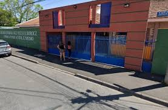
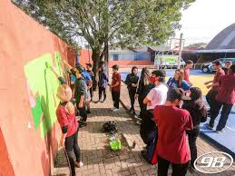

Acessibilidade
Corrimão e guarda corpos, Portas com vão livre de, no mínimo, 80 cm, Rampas, Pisos táteis, Sinalização tátil (piso/paredes), Sinalização sonora, Sinalização visual (piso/paredes), Sala de recursos multifuncionais para Atendimento Educacional Especializado (AEE), Salas de aula com acessibilidade para pessoas com deficiência ou mobilidade reduzida,Banheiro adequado à alunos com deficiência ou mobilidade reduzida.
Dependências
Biblioteca, Quadra de esportes coberta, Quadra de esportes descoberta, Pátio descoberto,Biblioteca com Sala de leitura,Laborarório de ciências,Cozinha, Refeitório, Alimentação escolar para os alunos.
Tecnologia
Acesso à Internet Para uso dos alunos, Internet Para uso nos processos de ensino e aprendizagem, Banda larga, Computador portátil em uso pelos alunos, Laboratório de informática, Desktop para aluno, Tablet em uso pelos alunos.

Sustentabilidade
Área verde, Reciclagem, Separação do lixo/resíduos.
Material Didático
Jogos Educativos, Acervo multimídia, Equipamento para amplificação e difusão de som/áudio, Materiais para atividades culturais e artísticas, Materiais para prática desportiva e recreação.
Profissionais
Bibliotecário(a), auxiliar de biblioteca ou monitor(a) da sala de leitura, Profissionais de preparação e segurança alimentar, Profissionais de apoio e supervisão pedagógica.
